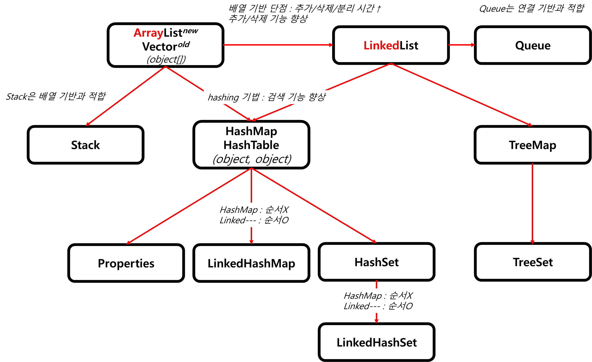

Ch11-52~56. Collections
0. 목차
Chapter11. 컬렉션 프레임웍
Ch11 - 52. Collections의 메서드 : 동기화
Ch11 - 53. Collections의 메서드 : 변경불가, 싱글톤
Ch11 - 54. Collections의 메서드 : 단일 컬렉션
Ch11 - 55. Collections 예제
Ch11 - 56. Collections 클래스 정리 & 요약
Ch11 - 52. Collections의 메서드 : 동기화
▶ Collections class란?
▷ 컬렉션을 위한 메서드(static)를 제공
- Objects(객체), Arrays(배열), Collections(컬렉션)과 비슷한 클래스
▶ 컬렉션 채우기, 복사, 정렬, 검색 ≒ collections
▷ fill(), copy(), sort(), binarySearch() 등…
▶ 컬렉션의 동기화
▷ 동기화X new ArrayList(…) -syncList→ 동기화O ArrayList(…)
- 마치, Vectorold 동기화O → ArrayListnew 동기화X
▷ synchronizedXXX()
List syncList = collections.synchronizedList(new ArrayList(...));
static Collection = synchronizedCollention(Collection c)
static List = synchronizedList(List list)
static Set = synchronizedSet(Set s)
static Map = synchronizedMap(Map m)
static SortedSet = synchronizedSortedSet(SortedSet ss)
static SortedMap = synchronizedSortedMap(SortedMap sm)
Ch11 - 53. Collections의 메서드 : 변경불가, 싱글톤
▶ 변경 불가(read Only) 컬렉션 만들기
▷ final int가 변경 불가 상수만들어 주는 것 처럼 만들어 주는 것
▷ unmodifiableXXX()
static Collection = unmodifiableCollention(Collection c)
static List = unmodifiableList(List list)
static Set = unmodifiableSet(Set s)
static Map = unmodifiableMap(Map m)
static SortedSet = unmodifiableSortedSet(SortedSet ss)
static NavigableSet = unmodifiableSortedMap(NavigableSet ns)
static SortedMap = unmodifiableSortedMap(SortedMap sm)
static NavigableMap = unmodifiableSortedSet(NavigableMap nm)
▶ 싱글톤 컬렉션 만들기
▷ 객체 1개만 저장 가능
▷ singletonXXX()
static List = singletonList(Object o)
static Set = singleton(Object o) // singletonSetX → singleton
static Map = singletonMap(Object key, Object value)
Ch11 - 54. Collections의 메서드 : 단일 컬렉션
▶ 한 종류의 객체만 저장하는 컬렉션 만들기
▷ checkedXXX()
List list = new ArrayList();
List checkedList = checkedList(list, String.class); // String만 저장가능
CheckedList.add("abc");
checkedList.add(new Integer(3)); // ERROR! ClassCastException 발생, String만 가능
static Collection = checkedCollention(Collection c, classCollection type)
static List = checkedList(List list, Class type)
static Set = checkedSet(Set s, Class type)
static Map = checkedMap(Map m, Class type, Class valueType)
static Queue = checkedMap(Queue queue, Class type)
static SortedSet = checkedSortedSet(SortedSet ss, Class type)
static NavigableSet = checkedSortedMap(NavigableSet ns, Class type)
static SortedMap = checkedSortedMap(SortedMap sm, Class type)
static NavigableMap = checkedSortedSet(NavigableMap nm, Class type)
Ch11 - 55. Collections 예제
▶ ArrayList 생성
▷ List list = new ArrayList()
List list = new ArrayList();
System.out.println(list);
// console
[]
▶ list에 1, 2, 3, 4, 5 추가
▷ addAll()
addAll(list, 1,2,3,4,5);
System.out.println(list);
// console
[1, 2, 3, 4, 5]
▶ 1, 2, 3, 4, 5를 list[2]에서 부터 시계 방향으로 돌리기
▷ rotate(list, 2)
rotate(list, 2);
System.out.println(list);
// console
[4, 5, 1, 2, 3]
▶ 4, 5, 1, 2, 3에서 list[0] ↔ list[2] 변경
▷ swap(list, 0, 2)
swap(list, 0, 2);
System.out.println(list);
// console
[1, 5, 4, 2, 3]
▶ 마음대로 섞기
▷ shuffle()
shuffle(list);
System.out.println(list);
// console
[3, 2, 1, 5, 4]
▶ 역순 정렬
▷ sort(list, reverseOrder()), reverse(list)
sort(list, reverseOrder());
System.out.println(list);
// console
[5, 4, 3, 2, 1]
▶ 정렬
▷ sort()
sort(list);
System.out.println(list);
// console
[1, 2, 3, 4, 5]
▶ 3이 저장 된 위치는?
▷ binarySearch(list, 3)
int idx = binarySearch(list, 3);
System.out.println("index of 3 = " + idx);
// console
index of 3 = 2 // list[2]에 3있음
▶ list의 최대값, 최소값 찾기
▷ 최대값 : max(), min()
▷ 최소값 : max(lis, reverseOrder())
System.out.println("max : " + max(list));
System.out.println("min : " + min(list));
System.out.println("min : " + max(list, reverseOrder()));
// console
max : 5
min : 1
min : 1
▶ list를 9로 다 채우기
▷ fill(list, 9)
fill(list, 9);
System.out.println("list : " + list);
// console
list : [9, 9, 9, 9, 9]
▶ list 크기에 2로 채워진 새로운 List 생성
▷ List newList = nCopies(list.size(), 2)
List newList = nCopies(list.size(), 2);
System.out.println("newList : " + newList);
// console
newList : [2, 2, 2, 2, 2]
▶ list와 newList 사이 공통 요소가 없으면 true
▷ disjoint(list, newList)
System.out.println(disjoint(list, newList));
// console
true // 공통 요소 없음
▶ newList를 list에 복사
▷ copy(list, newList)
copy(list, newList);
System.out.println("newList : "+newList);
System.out.println("list : " + list);
// console
newList : [2, 2, 2, 2, 2]
list : [2, 2, 2, 2, 2]
▶ list의 2를 1로 변경
▷ replaceAll(list, 2, 1)
replaceAll(list, 2, 1);
System.out.println("list : " + list);
// console
list : [1, 1, 1, 1, 1]
▶ 새로운 list를 만듦
▷ enumeration(list)
Enumeration e = enumeration(list);
ArrayList list2 = list(e);
// console
list2 : [1, 1, 1, 1, 1]
Ch11 - 56. Collections 클래스 정리 & 요약
